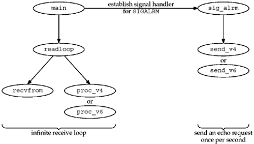
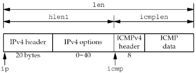
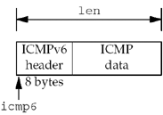

| [ Team LiB ] |
|
28.5 ping ProgramIn this section, we will develop and present a version of the ping program that works with both IPv4 and IPv6. We will develop our own program instead of presenting the publicly available source code for two reasons. First, the publicly available ping program suffers from a common programming disease known as creeping featurism: It supports a dozen different options. Our goal in examining a ping program is to understand the network programming concepts and techniques without being distracted by all these options. Our version of ping supports only one option and is about five times smaller than the public version. Second, the public version works only with IPv4 and we want to show a version that also supports IPv6. The operation of ping is extremely simple: An ICMP echo request is sent to some IP address and that node responds with an ICMP echo reply. These two ICMP messages are supported under both IPv4 and IPv6. Figure 28.1 shows the format of the ICMP messages. Figure 28.1. Format of ICMPv4 and ICMPv6 echo request and echo reply messages.
Figure A.15 and A.16 show the type values for these messages and also show that the code is 0. We will see that we set the identifier to the PID of the ping process and we increment the sequence number by one for each packet we send. We store the 8-byte timestamp of when the packet is sent as the optional data. The rules of ICMP require that the identifier, sequence number, and any optional data be returned in the echo reply. Storing the timestamp in the packet lets us calculate the RTT when the reply is received. Figure 28.2 shows some examples of our program. The first uses IPv4 and the second uses IPv6. Note that we made our ping program set-user-ID, as it takes superuser privileges to create a raw socket. Figure 28.2 Sample output from our ping program.freebsd % ping www.google.com PING www.google.com (216.239.57.99): 56 data bytes 64 bytes from 216.239.57.99: seq=0, ttl=53, rtt=5.611 ms 64 bytes from 216.239.57.99: seq=1, ttl=53, rtt=5.562 ms 64 bytes from 216.239.57.99: seq=2, ttl=53, rtt=5.589 ms 64 bytes from 216.239.57.99: seq=3, ttl=53, rtt=5.910 ms freebsd % ping www.kame.net PING orange.kame.net (2001:200:0:4819:203:47ff:fea5:3085): 56 data bytes 64 bytes from 2001:200:0:4819:203:47ff:fea5:3085: seq=0, hlim=52, rtt=422.066 ms 64 bytes from 2001:200:0:4819:203:47ff:fea5:3085: seq=1, hlim=52, rtt=417.398 ms 64 bytes from 2001:200:0:4819:203:47ff:fea5:3085: seq=2, hlim=52, rtt=416.528 ms 64 bytes from 2001:200:0:4819:203:47ff:fea5:3085: seq=3, hlim=52, rtt=429.192 ms Figure 28.3 is an overview of the functions that comprise our ping program. Figure 28.3. Overview of the functions in our ping program. The program operates in two parts: One half reads everything received on a raw socket, printing the ICMP echo replies, and the other half sends an ICMP echo request once per second. The second half is driven by a SIGALRM signal once per second. Figure 28.4 shows our ping.h header that is included by all our program files. Figure 28.4 ping.h header.ping/ping.h
1 #include "unp.h"
2 #include <netinet/in_systm.h>
3 #include <netinet/ip.h>
4 #include <netinet/ip_icmp.h>
5 #define BUFSIZE 1500
6 /* globals */
7 char sendbuf[BUFSIZE];
8 int datalen; /* #bytes of data following ICMP header */
9 char *host;
10 int nsent; /* add 1 for each sendto() */
11 pid_t pid; /* our PID */
12 int sockfd;
13 int verbose;
14 /* function prototypes */
15 void init_v6(void);
16 void proc_v4(char *, ssize_t, struct msghdr *, struct timeval *);
17 void proc_v6(char *, ssize_t, struct msghdr *, struct timeval *);
18 void send_v4(void);
19 void send_v6(void);
20 void readloop(void);
21 void sig_alrm(int);
22 void tv_sub(struct timeval *, struct timeval *);
23 struct proto {
24 void (*fproc) (char *, ssize_t, struct msghdr *, struct timeval *);
25 void (*fsend) (void);
26 void (*finit) (void);
27 struct sockaddr *sasend; /* sockaddr{} for send, from getaddrinfo */
28 struct sockaddr *sarecv; /* sockaddr{} for receiving */
29 socklen_t salen; /* length of sockaddr {}s */
30 int icmpproto; /* IPPROTO_xxx value for ICMP */
31 } *pr;
32 #ifdef IPV6
33 #include <netinet/ip6.h>
34 #include <netinet/icmp6.h>
35 #endif
Include IPv4 and ICMPv4 headers1–22 We include the basic IPv4 and ICMPv4 headers, define some global variables, and our function prototypes. Define proto structure23–31 We use the proto structure to handle the difference between IPv4 and IPv6. This structure contains two function pointers, two pointers to socket address structures, the size of the socket address structures, and the protocol value for ICMP. The global pointer pr will point to one of the structures that we will initialize for either IPv4 or IPv6. Include IPv6 and ICMPv6 headers32–35 We include two headers that define the IPv6 and ICMPv6 structures and constants (RFC 3542 [Stevens et al. 2003]). The main function is shown in Figure 28.5. Figure 28.5 main function.ping/main.c
1 #include "ping.h"
2 struct proto proto_v4 =
3 { proc_v4, send_v4, NULL, NULL, NULL, 0, IPPROTO_ICMP };
4 #ifdef IPV6
5 struct proto proto_v6 =
6 { proc_v6, send_v6, NULL, NULL, 0, IPPROTO_ICMPV6 };
7 #endif
8 int datalen = 56; /* data that goes with ICMP echo request */
9 int
10 main(int argc, char **argv)
11 {
12 int c;
13 struct addrinfo *ai;
14 char *h;
15 opterr = 0; /* don't want getopt() writing to stderr */
16 while ( (c = getopt (argc, argv, "v") ) != -1) {
17 switch (c) {
18 case 'v':
19 verbose++;
20 break;
21 case '?':
22 err_quit ("unrecognized option: %c", c);
23 }
24 }
25 if (optind != argc - 1)
26 err_quit ("usage: ping [ -v ] <hostname>");
27 host = argv [optind];
28 pid = getpid() & Oxffff; /* ICMP ID field is 16 bits */
29 Signal(SIGALRM, sig_alrm);
30 ai = Host_serv (host, NULL, 0, 0);
31 h = Sock_ntop_host(ai->ai_addr, ai->ai_addrlen);
32 printf ("PING %s (%s): %d data bytes\n",
33 ai->ai_canonname ? ai->ai_canonname : h, h, datalen);
34 /* initialize according to protocol */
35 if (ai->ai_family == AF_INET) {
36 pr = &proto_v4;
37 #ifdef IPV6
38 } else if (ai->ai_family == AF_INET6) {
39 pr = &proto_v6;
40 if (IN6_IS_ADDR_V4MAPPED (&(((struct sockaddr_in6 *)
41 ai->ai_addr)->sin6_addr)))
42 err_quit ("cannot ping IPv4-mapped IPv6 address");
43 #endif
44 } else
45 err_quit ("unknown address family %d", ai->ai_family);
46 pr->sasend = ai->ai_addr;
47 pr->sacrecv = Calloc (1, ai->ai_addrlen);
48 pr->salen = ai->ai_addrlen);
49 readloop();
50 exit(0);
51 }
Define proto structures for IPv4 and IPv62–7 We define a proto structure for IPv4 and IPv6. The socket address structure pointers are initialized to null pointers, as we do not yet know whether we will use IPv4 or IPv6. Length of optional data8 We set the amount of optional data that gets sent with the ICMP echo request to 56 bytes. This will yield an 84-byte IPv4 datagram (20-byte IPv4 header and 8-byte ICMP header) or a 104-byte IPv6 datagram. Any data that accompanies an echo request must be sent back in the echo reply. We will store the time at which we send an echo request in the first 8 bytes of this data area and then use this to calculate and print the RTT when the echo reply is received. Handle command-line options15–24 The only comman-line option we support is -v, which will cause us to print most received ICMP messages. (We do not print echo replies belonging to another copy of ping that is running.) A signal handler is established for SIGALRM, and we will see that this signal is generated once per second and causes an ICMP echo request to be sent. Process hostname argument31–48 A hostname or IP address string is a required argument and it is processed by our host_serv function. The returned addrinfo structure contains the protocol family, either AF_INET or AF_INET6. We initialize the pr global to the correct proto structure. We also make certain that an IPv6 address is not really an IPv4-mapped IPv6 address by calling IN6_IS_ADDR_V4MAPPED, because even though the returned address is an IPv6 address, IPv4 packets will be sent to the host. (We could switch and use IPv4 when this happens.) The socket address structure that has already been allocated by the getaddrinfo function is used as the one for sending, and another socket address structure of the same size is allocated for receiving. 49 The function readloop is where the processing takes place. We will show this in Figure 28.6. Create socket12–13 A raw socket of the appropriate protocol is created. The call to setuid sets our effective user ID to our real user ID, in case the program was set-user-ID instead of being run by root. The program must have superuser privileges to create the raw socket, but now that the socket is created, we can give up the extra privileges. It is always best to give up an extra privilege when it is no longer needed, just in case the program has a latent bug that someone could exploit. Figure 28.6 readloop function.ping/readloop.c
1 #include "ping.h"
2 void
3 readloop(void)
4 {
5 int size;
6 char recvbuf[BUFSIZE];
7 char controlbuf[BUFSIZE];
8 struct msghdr msg;
9 struct iovec iov;
10 ssize_t n;
11 struct timeval tval;
12 sockfd = Socket(pr->sasend->sa_family, SOCK_RAW, pr->icmpproto);
13 setuid(getuid()); /* don't need special permissions any more */
14 if (pr->finit)
15 (*pr->finit) ();
16 size = 60 * 1024; /* OK if setsockopt fails */
17 setsockopt (sockfd, SOL_SOCKET, SO_RCVBUF, &size, sizeof (size));
18 sig_alrm (SIGALRM); /* send first packet */
19 iov.iov_base = recvbuf;
20 iov.iov_len = sizeof (recvbuf);
21 msg.msg_name = pr->sarecv;
22 msg.msg_iov = &iov;
23 msg.msg_iovlen = 1;
24 msg.msg_control = controlbuf;
25 for ( ; ; ) {
26 msg.msg_namelen = pr->salen;
27 msg.msg_controllen = sizeof (controlbuf);
28 n = recvmsg (sockfd, &msg, 0);
29 if (n < o) {
30 if (errno == EINTR)
31 continue;
32 else
33 err_sys("recvmsg error");
34 }
35 Gettimeofday (&tval, NULL);
36 (*pr->fproc) (recvbuf, n, &msg, &tval);
37 }
38 }
Perform protocol-specific initialization14–15 If the protocol specified an initialization function, we call it. We show the IPv6 initialization function in Figure 28.10. Set socket receive buffer size16–17 We try to set the socket receive buffer size to 61,440 bytes (60 x 1024), which should be larger than the default. We do this in case the user pings either the IPv4 broadcast address or a multicast address, either of which can generate lots of replies. By making the buffer larger, there is a smaller chance that the socket receive buffer will overflow. Send first packet18 We call our signal handler, which we will see sends a packet and schedules a SIGALRM for one second in the future. It is not common to see a signal handler called directly, as we do here, but it is acceptable. A signal handler is just a C function, even though it is normally called asynchronously. Set up msghdr for recvmsg19–24 We set up the unchanging fields in the msghdr and iovec structs that we will pass to recvmsg. Infinite loop reading all ICMP messages25–37 The main loop of the program is an infinite loop that reads all packets returned on the raw ICMP socket. We call gettimeofday to record the time that the packet was received and then call the appropriate protocol function (proc_v4 or proc_v6) to process the ICMP message. Figure 28.7 shows the tv_sub function, which subtracts two timeval structures, storing the result in the first structure. Figure 28.7 tv_sub function: subtracts two timeval structures.lib/tv_sub.c
1 #include "unp.h"
2 void
3 tv_sub (struct timeval *out, struct timeval *in)
4 {
5 if ((out->tv_usec -= in->tv_usec) < 0) { /* out -= in */
6 --out->tv_sec;
7 out->tv_usec += 1000000;
8 }
9 out->tv_sec -= in->tv_sec;
10 }
Figure 28.8 shows the proc_v4 function, which processes all received ICMPv4 messages. You may want to refer to Figure A.1, which shows the format of the IPv4 header. Also realize that when the ICMPv4 message is received by the process on the raw socket, the kernel has already verified that the basic fields in the IPv4 header and in the ICMPv4 header are valid (pp. 214 and 311 of TCPv2). Figure 28.8 proc_v4 function: processes ICMPv4 message.ping/proc_v4.c
1 #include "ping.h"
2 void
3 proc_v4 (char *ptr, ssize_t len, struct msghdr *msg, struct timeval *tvrecv)
4 {
5 int hlenl, icmplen;
6 double rtt;
7 struct ip *ip;
8 struct icmp *icmp;
9 struct timeval *tvsend;
10 ip = (struct ip *) ptr; /* start of IP header */
11 hlenl = ip->ip_hl << 2; /* length of IP header */
12 if (ip->ip_p != IPPROTO_ICMP)
13 return; /* not ICMP */
14 icmp = (struct icmp *) (ptr + hlenl); /* start of ICMP header */
15 if ( (icmplen = len - hlenl) < 8)
16 return; /* malformed packet */
17 if (icmp->icmp_type == ICMP_ECHOREPLY) {
18 if (icmp->icmp_id != pid)
19 return; /* not a response to our ECHO_REQUEST */
20 if (icmplen < 16)
21 return; /* not enough data to use */
22 tvsend = (struct timeval *) icmp->icmp_data;
23 tv_sub (tvrecv, tvsend);
24 rtt = tvrecv->tv_sec * 1000.0 + tvrecv->tv_usec / 1000.0;
25 printf ("%d bytes from %s: seq=%u, ttl=%d, rtt=%.3f ms\n",
26 icmplen, Sock_ntop_host (pr->sarecv, pr->salen),
27 icmp->icmp_seq, ip->ip_ttl, rtt);
28 } else if (verbose) {
29 printf (" %d bytes from %s: type = %d, code = %d\n",
30 icmplen, Sock_ntop_host (pr->sarecv, pr->salen),
31 icmp->icmp_type, icmp->icmp_code);
32 }
33 }
Get pointer to ICMP header10–16 The IPv4 header length field is multiplied by 4, giving the size of the IPv4 header in bytes. (Remember that an IPv4 header can contain options.) This lets us set icmp to point to the beginning of the ICMP header. We make sure that the IP protocol is ICMP and that there is enough data echoed to look at the timestamp we included in the echo request. Figure 28.9 shows the various headers, pointers, and lengths used by the code. Figure 28.9. Headers, pointers, and lengths in processing ICMPv4 reply. Check for ICMP echo reply17–21 If the message is an ICMP echo reply, then we must check the identifier field to see if this reply is in response to a request our process sent. If the ping program is running multiple times on this host, each process gets a copy of all received ICMP messages. 22–27 We calculate the RTT by subtracting the time the message was sent (contained in the optional data portion of the ICMP reply) from the current time (pointed to by the tvrecv function argument). The RTT is converted from microseconds to milliseconds and printed, along with the sequence number field and the received TTL. The sequence number field lets the user see if packets were dropped, reordered, or duplicated, and the TTL gives an indication of the number of hops between the two hosts. Print all received ICMP messages if verbose option specified28–32 If the user specified the -v command-line option, we print the type and code fields from all other received ICMP messages. The processing of ICMPv6 messages is handled by the proc_v6 function, shown in Figure 28.12 (p. 751). It is similar to the proc_v4 function; however, since IPv6 raw sockets do not return the IPv6 header, it receives the hop limit as ancillary data. This was set up using the init_v6 function, shown in Figure 28.10. The init_v6 function prepares the socket for use. Set ICMPv6 receive filter6–14 If the -v command-line option was not specified, install a filter that blocks all ICMP message types except for the expected echo reply. This reduces the number of packets received on the socket. Request IPV6_HOPLIMIT ancillary data15–22 The API to request reception of the hop limit with incoming packets has changed over time. We prefer the newer API: setting the IPV6_RECVHOPLIMIT socket option. However, if the constant for this option is not defined, we can try the older API: setting IPV6_HOPLIMIT as an option. We don't check the return value from setsockopt, since the program can still do useful work without receiving the hop limit. Figure 28.10 init_v6 function: initializes ICMPv6 socket.ping/init_v6.c
1 void
2 init_v6()
3 {
4 #ifdef IPV6
5 int on = 1;
6 if (verbose == 0) {
7 /* install a filter that only passes ICMP6_ECHO_REPLY unless verbose */
8 struct icmp6_filter myfilt;
9 ICMP6_FILTER_SETBLOCKALL (&myfilt);
10 ICMP6_FILTER_SETPASS (ICMP6_ECHO_REPLY, &myfilt);
11 setsockopt (sockfd, IPPROTO_IPV6, ICMP6_FILTER, &myfilt,
12 sizeof (myfilt));
13 /* ignore error return; the filter is an optimization */
14 }
15 /* ignore error returned below; we just won't receive the hop limit */
16 #ifdef IPV6_RECVHOPLIMIT
17 /* RFC 3542 */
18 setsockopt (sockfd, IPPROTO_IPV6, IPV6_RECVHOPLIMIT, &on, sizeof(on));
19 #else
20 /* RFC 2292 */
21 setsockopt (sockfd, IPPROTO_IPV6, IPV6_HOPLIMIT, &on, sizeof(on));
22 #endif
23 #endif
24 }
The proc_v6 function (Figure 28.12) processes incoming packets. Get pointer to ICMPv6 header11–13 The ICMPv6 header is the data returned by the receive operation. (Recall that the IPv6 header and extension headers, if any, are never returned as normal data, but as ancillary data.) Figure 28.11 shows the various headers, pointers, and lengths used by the code. Figure 28.11. Headers, pointers, and lengths in processing ICMPv6 reply. Check for ICMP echo reply14–37 If the ICMP message type is an echo reply, we check the identifier field to see if the reply is for us. If so, we calculate the RTT and then print it along with the sequence number and IPv6 hop limit. We obtain the hop limit from the IPV6_HOPLIMIT ancillary data. Figure 28.12 proc_v6 function: processes received ICMPv6 message.ping/proc_v6.c
1 #include "ping.h"
2 void
3 proc_v6 (char *ptr, ssize_t len, struct msghdr *msg, struct timeval *tvrecv)
4 {
5 #ifdef IPV6
6 double rtt;
7 struct icmp6_hdr *icmp6;
8 struct timeval *tvsend;
9 struct cmsghdr *cmsg;
10 int hlim;
11 icmp6 = (struct icmp6_hdr *) ptr;
12 if (len < 8)
13 return; /* malformed packet */
14 if (icmp6->icmp6_type == ICMP6_ECHO_REPLY) {
15 if (icmp6->icmp6_id != pid)
16 return; /* not a response to our ECHO_REQUEST */
17 if (len < 16)
18 return; /* not enough data to use */
19 tvsend = (struct timeval *) (icmp6 + 1);
20 tv_sub (tvrecv, tvsend);
21 rtt = tvrecv->tv_sec * 1000.0 + tvrecv->tv_usec / 1000.0;
22 hlim = -1;
23 for (cmsg = CMSG_FIRSTHDR (msg); cmsg != NULL;
24 cmsg = CMSG_NXTHDR (msg, cmsg)) {
25 if (cmsg->cmsg_level == IPPROTO_IPV6
26 && cmsg->cmsg_type == IPV6_HOPLIMIT) {
27 hlim = * (u_int32_t *) CMSG_DATA (cmsg);
28 break;
29 }
30 }
31 printf("%d bytes from %s: seq=%u, hlim=",
32 len, Sock_ntop_host (pr->sarecv, pr->salen), icmp6->icmp6_seq);
33 if (hlim == -1)
34 printf("???"); /* ancillary data missing */
35 else
36 printf("%d", hlim);
37 printf(", rtt=%.3f ms\n", rtt);
38 } else if (verbose) {
39 printf(" %d bytes from %s: type = %d, code = %d\n",
40 len, Sock_ntop_host (pr->sarecv, pr->salen),
41 icmp6->icmp6_type, icmp6->icmp6_code);
42 }
43 #endif /* IPV6 */
44 }
Print all received ICMP messages if verbose option specified38–41 If the user specified the -v command-line option, we print the type and code fields from all other received ICMP messages. Our signal handler for the SIGALRM signal is the sig_alrm function, shown in Figure 28.13. We saw in Figure 28.6 that our readloop function calls this signal handler once at the beginning to send the first packet. This function just calls the protocol-dependent function to send an ICMP echo request (send_v4 or send_v6) and then schedules another SIGALRM for one second in the future. Figure 28.13 sig_alrm function: SIGALRM signal handler.ping/sig_alrm.c
1 #include "ping.h"
2 void
3 sig_alrm (int signo)
4 {
5 (*pr->fsend) ();
6 alarm(1);
7 return;
8 }
The function send_v4, shown in Figure 28.14, builds an ICMPv4 echo request message and writes it to the raw socket. Figure 28.14 send_v4 function: builds an ICMPv4 echo request message and sends it.ping/send_v4.c
1 #include "ping.h"
2 void
3 send_v4 (void)
4 {
5 int len;
6 struct icmp *icmp;
7 icmp = (struct icmp *) sendbuf;
8 icmp->icmp_type = ICMP_ECHO;
9 icmp->icmp_code = 0;
10 icmp->icmp_id = pid;
11 icmp->icmp-seq = nsent++;
12 memset (icmp->icmp_data, 0xa5, datalen); /* fill with pattern */
13 Gettimeofday ((struct timeval *) icmp->icmp_data, NULL);
14 len = 8 + datalen; /* checksum ICMP header and data */
15 icmp->icmp_cksum = 0;
16 icmp->icmp_cksum = in_cksum ((u_short *) icmp, len);
17 Sendto (sockfd, sendbuf, len, 0, pr->sasend, pr->salen);
18 }
Build ICMPv4 message7–13 The ICMPv4 message is built. The identifier field is set to our PID and the sequence number field is set to the global nsent, which is then incremented for the next packet. We store a pattern of 0xa5 in the data portion of the ICMP message. The current time-of-day is then stored in the beginning of the data portion. Calculate ICMP checksum14–16 To calculate the ICMP checksum, we set the checksum field to 0 and call the function in_cksum, storing the result in the checksum field. The ICMPv4 checksum is calculated from the ICMPv4 header and any data that follows. Send datagram17 The ICMP message is sent on the raw socket. Since we have not set the IP_HDRINCL socket option, the kernel builds the IPv4 header and prepends it to our buffer. The Internet checksum is the one's complement of the one's complement sum of the 16-bit values to be checksummed. If the data length is an odd number, then 1 byte of 0 is logically appended to the end of the data, just for the checksum computation. Before computing the checksum, the checksum field itself is set to 0. This algorithm is used for the IPv4, ICMPv4, IGMPv4, ICMPv6, UDP, and TCP checksums. RFC 1071 [Braden, Borman, and Partridge 1988] contains additional information and some numeric examples. Section 8.7 of TCPv2 talks about this algorithm in more detail and shows a more efficient implementation. Our in_cksum function, shown in Figure 28.15, calculates the checksum. Figure 28.15 in_cksum function: calculate the Internet checksum.libfree/in_cksum.c
1 uint16_t
2 in_cksum (uint16_t * addr, int len)
3 {
4 int nleft = len;
5 uint32_t sum = 0;
6 uint16_t *w = addr;
7 uint16_t answer = 0;
8 /*
9 * Our algorithm is simple, using a 32 bit accumulator (sum), we add
10 * sequential 16 bit words to it, and at the end, fold back all the
11 * carry bits from the top 16 bits into the lower 16 bits.
12 */
13 while (nleft > 1) {
14 sum += *w++;
15 nleft -= 2;
16 }
17 /* mop up an odd byte, if necessary */
18 if (nleft == 1) {
19 * (unsigned char *) (&answer) = * (unsigned char *) w;
20 sum += answer;
21 }
22 /* add back carry outs from top 16 bits to low 16 bits */
23 sum = (sum >> 16) + (sum & 0xffff); /* add hi 16 to low 16 */
24 sum += (sum >> 16); /* add carry */
25 answer = ~sum; /* truncate to 16 bits */
26 return (answer);
27 }
Internet checksum algorithm1–27 The first while loop calculates the sum of all the 16-bit values. If the length is odd, then the final byte is added in with the sum. The algorithm we show in Figure 28.15 is the simple algorithm. The kernel often has a specially optimized checksum algorithm due to the high volume of checksum computations performed by the kernel.
The final function for our ping program is send_v6, shown in Figure 28.16, which builds and sends an ICMPv6 echo request. Figure 28.16 send_v6 function: builds and sends an ICMPv6 echo request message.ping/send_v6.c
1 #include "ping.h"
2 void
3 send_v6 ()
4 {
5 #ifdef IPV6
6 int len;
7 struct icmp6_hdr *icmp6;
8 icmp6 = (struct icmp6_hdr *) sendbuf;
9 icmp6->icmp6_type = ICMP6_ECHO_REQUEST;
10 icmp6->icmp6_code = 0;
11 icmp6->icmp6_id = pid;
12 icmp6->icmp6_seq = nsent++;
13 memset ((icmp6 + 1), 0xa5, datalen); /* fill with pattern */
14 Gettimeofday ((struct timeval *) (icmp6 + 1), NULL);
15 len = 8 + datalen; /* 8-byte ICMPv6 header */
16 Sendto (sockfd, sendbuf, len, 0, pr->sasend, pr->salen);
17 /* kernel calculates and stores checksum for us */
18 #endif /* IPV6 */
19 }
The send_v6 function is similar to send_v4, but notice that it does not compute the ICMPv6 checksum. As we mentioned earlier in the chapter, since the ICMPv6 checksum uses the source address from the IPv6 header in its computation, this checksum is calculated by the kernel for us, after the kernel chooses the source address. |
| [ Team LiB ] |
|